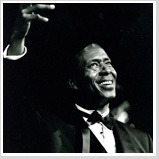
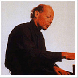
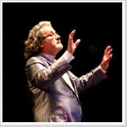

About Us 会社概要＞Artist アーティスト
◆ Tate Corporationがマネージメントしているアーティストをご紹介します。◆

脚本、演出、舞台俳優
CLARKE PETERS （クラーク・ピータース）
「Five Guys Named Moe」を脚本・演出し、ロンドン・ウエストエンドにてローレンス・オリビエ賞を受賞。また、Nat King Story 「UNFORGETTABLE」を脚本・演出し、ローレンス・オリビエ賞にノミネート。舞台俳優としても「Kiss of the Spider Women」「Guys and Dolls」「Chicago」「The Wiz」「Driving Miss Daisy」「Blues in the Night」 など多数のメジャー作品で主役としてニューヨーク、ブロードウェイ、ウエスト・エンドにて活躍。
CLARKE PETERS （クラーク・ピータース）
「Five Guys Named Moe」を脚本・演出し、ロンドン・ウエストエンドにてローレンス・オリビエ賞を受賞。また、Nat King Story 「UNFORGETTABLE」を脚本・演出し、ローレンス・オリビエ賞にノミネート。舞台俳優としても「Kiss of the Spider Women」「Guys and Dolls」「Chicago」「The Wiz」「Driving Miss Daisy」「Blues in the Night」 など多数のメジャー作品で主役としてニューヨーク、ブロードウェイ、ウエスト・エンドにて活躍。

ピアニスト
DAVID HELFGOTT （デヴィッド・ヘルフゴット）
‘97年度、アカデミー賞に７部門ノミネート。そして、最優秀主演男優賞を獲得した “輝く”ような愛の映画「shine/シャイン」。その感動の物語のモデルとなったのが驚異の天才ピアニスト、デヴィッド・ヘルフゴットである。数々のコンクールで優勝し、ロンドンの王立音楽院に留学。現在の妻であるギリアンと出会い、彼女の深い愛情に包まれて、’84年ステージに復活。’97年から毎年行っている大規模なワールドツアーでは、日本を含め各地でソールド・アウトを記録し、大喝采を浴びている。
DAVID HELFGOTT （デヴィッド・ヘルフゴット）
‘97年度、アカデミー賞に７部門ノミネート。そして、最優秀主演男優賞を獲得した “輝く”ような愛の映画「shine/シャイン」。その感動の物語のモデルとなったのが驚異の天才ピアニスト、デヴィッド・ヘルフゴットである。数々のコンクールで優勝し、ロンドンの王立音楽院に留学。現在の妻であるギリアンと出会い、彼女の深い愛情に包まれて、’84年ステージに復活。’97年から毎年行っている大規模なワールドツアーでは、日本を含め各地でソールド・アウトを記録し、大喝采を浴びている。
サウンド・オブ・ミュージック
VON TRAPP SINGERS （フォン・トラップ・シンガーズ）
数々の名曲で知られ、世界中で愛される名画「サウンド・オブ・ミュージック」。この物語は実話であり、そのモデルとなった一家は実在し、その後、アメリカに渡った彼らは、30年以上にも渡って、ファミリー団体として世界中をツアーして歌い続けていました。そして、現在もその美しい歌声は響き続けています。それがトラップ一家の孫たち4人によって構成されたファミリー合唱団「フォン・トラップ・シンガーズ」です。
VON TRAPP SINGERS （フォン・トラップ・シンガーズ）
数々の名曲で知られ、世界中で愛される名画「サウンド・オブ・ミュージック」。この物語は実話であり、そのモデルとなった一家は実在し、その後、アメリカに渡った彼らは、30年以上にも渡って、ファミリー団体として世界中をツアーして歌い続けていました。そして、現在もその美しい歌声は響き続けています。それがトラップ一家の孫たち4人によって構成されたファミリー合唱団「フォン・トラップ・シンガーズ」です。

ゴスペル・クアイア
Glory Gospel Singers (グローリー・ゴスペル・シンガーズ)
ニューヨークで誕生した「グローリー・ゴスペル・シンガーズ」は、音楽の殿堂カーネギー・ホールやリンカーン・センターでパフォーマンスを繰り広げる、本場が誇るビッグ・ゴスペル・クアイアーである。ダイアナ・ロス、ホイットニー・ヒューストン、アレサ・フランクリンらが大絶賛した彼らの魂の歌声は全米1000 カ所以上もの教会、そして、各地の音楽祭りでもセンセーションを巻き起こしている。
Glory Gospel Singers (グローリー・ゴスペル・シンガーズ)
ニューヨークで誕生した「グローリー・ゴスペル・シンガーズ」は、音楽の殿堂カーネギー・ホールやリンカーン・センターでパフォーマンスを繰り広げる、本場が誇るビッグ・ゴスペル・クアイアーである。ダイアナ・ロス、ホイットニー・ヒューストン、アレサ・フランクリンらが大絶賛した彼らの魂の歌声は全米1000 カ所以上もの教会、そして、各地の音楽祭りでもセンセーションを巻き起こしている。

グランド・オーケストラ
Jean-Jacques Justafré （ジャン・ジャック・ジュスタフレ）
ジャン・ジャック・ジュスタフレは2009年のポール・モーリア・メモリアル公演後、その華麗なサウンドを後世まで残し続けたいとの願いからポール・モーリア・オーケストラのメンバーを中心にジャン・ジャック・ジュスタフレ・グランド・オーケストラを結成、2010年から2012年までの3年間、ロシア、中国で5回のコンサート・ツアーを開催、約70回のコンサートでその実力を蓄積し、すでに海外では多くのポール・モーリア・ファンから絶賛されています。
Jean-Jacques Justafré （ジャン・ジャック・ジュスタフレ）
ジャン・ジャック・ジュスタフレは2009年のポール・モーリア・メモリアル公演後、その華麗なサウンドを後世まで残し続けたいとの願いからポール・モーリア・オーケストラのメンバーを中心にジャン・ジャック・ジュスタフレ・グランド・オーケストラを結成、2010年から2012年までの3年間、ロシア、中国で5回のコンサート・ツアーを開催、約70回のコンサートでその実力を蓄積し、すでに海外では多くのポール・モーリア・ファンから絶賛されています。

俳優・劇作家・演出家
LINDSAY KEMP （リンゼイ・ケンプ）
英国生まれ。4歳からダンスを学び、マルセル・マルソーの元でマイムを学ぶ。’62年にカンパニーを結成。「フラワーズ」「真夏の夜の夢」「ザ・ビッグ・パレード」など多数の衝撃作を世に送り出す。幻想的なステージは、ダンス・オペラ・マイム・演劇・絵画・映画とあらゆるジャンルが融合して成立している。愛弟子のデヴイッド・ボウイやケイト・ブッシュらを世界的にデビューさせ、音楽界では「ジキー・スターダスト」を演出、映画界ではデレク・ジャーマン作品への出演などでも活躍。ヨーロッパ各地で不動の地位を確立し、世界各国のアーティストに影響を与え続けている。
LINDSAY KEMP （リンゼイ・ケンプ）
英国生まれ。4歳からダンスを学び、マルセル・マルソーの元でマイムを学ぶ。’62年にカンパニーを結成。「フラワーズ」「真夏の夜の夢」「ザ・ビッグ・パレード」など多数の衝撃作を世に送り出す。幻想的なステージは、ダンス・オペラ・マイム・演劇・絵画・映画とあらゆるジャンルが融合して成立している。愛弟子のデヴイッド・ボウイやケイト・ブッシュらを世界的にデビューさせ、音楽界では「ジキー・スターダスト」を演出、映画界ではデレク・ジャーマン作品への出演などでも活躍。ヨーロッパ各地で不動の地位を確立し、世界各国のアーティストに影響を与え続けている。

俳優・劇作家・演出家
STEVEN BERKOFF （スティーブン・バーコフ）
俳優・劇作家・演出家であるスティーブン・バーコフは、’37年ロンドンで生まれる。ロンドン・パリで演劇を学び、’68年ロンドン・シアター・グループを結成。視覚イメージを大切にした独特な舞台を展開し、今、ロンドン・ウエストエンドで人気、実力ともにNo.1の演出家である。代表作品は、「イースト」(‘75年)、「グリーク」(‘82年)、そしてロマン・ポランスキー、ミハイル・バリシニコフが演じた「変身」等。特に「変身」は、世界的な注目を浴びた成功作。俳優として「ビバリー・ヒルズ・コップ」「ランボー／怒りの脱出」等映画出演多数。
STEVEN BERKOFF （スティーブン・バーコフ）
俳優・劇作家・演出家であるスティーブン・バーコフは、’37年ロンドンで生まれる。ロンドン・パリで演劇を学び、’68年ロンドン・シアター・グループを結成。視覚イメージを大切にした独特な舞台を展開し、今、ロンドン・ウエストエンドで人気、実力ともにNo.1の演出家である。代表作品は、「イースト」(‘75年)、「グリーク」(‘82年)、そしてロマン・ポランスキー、ミハイル・バリシニコフが演じた「変身」等。特に「変身」は、世界的な注目を浴びた成功作。俳優として「ビバリー・ヒルズ・コップ」「ランボー／怒りの脱出」等映画出演多数。